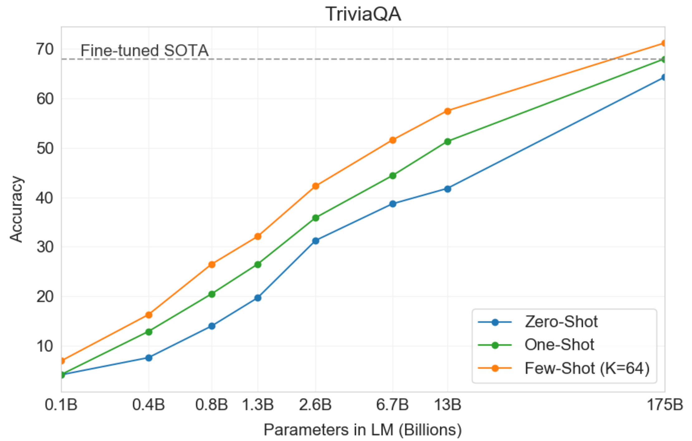
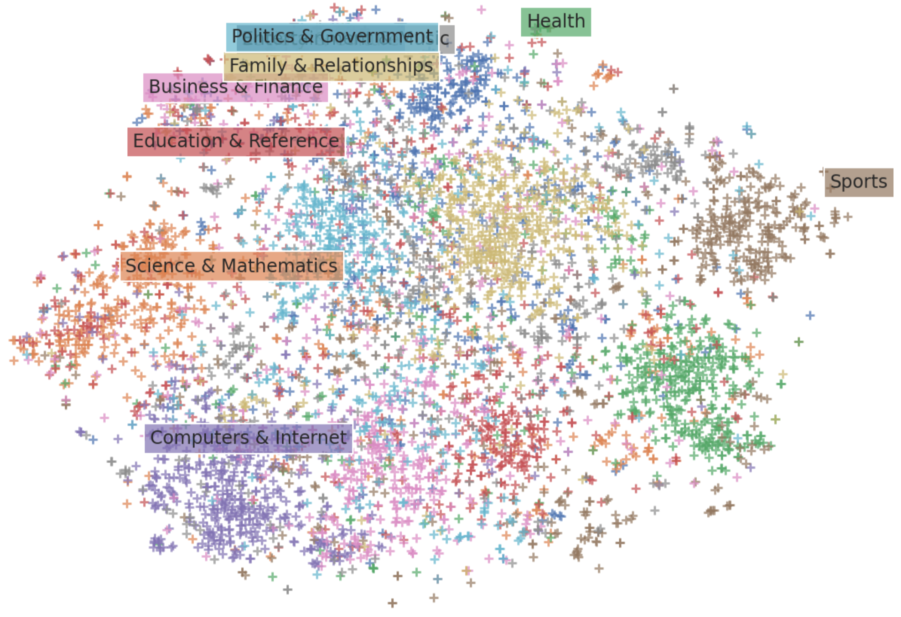
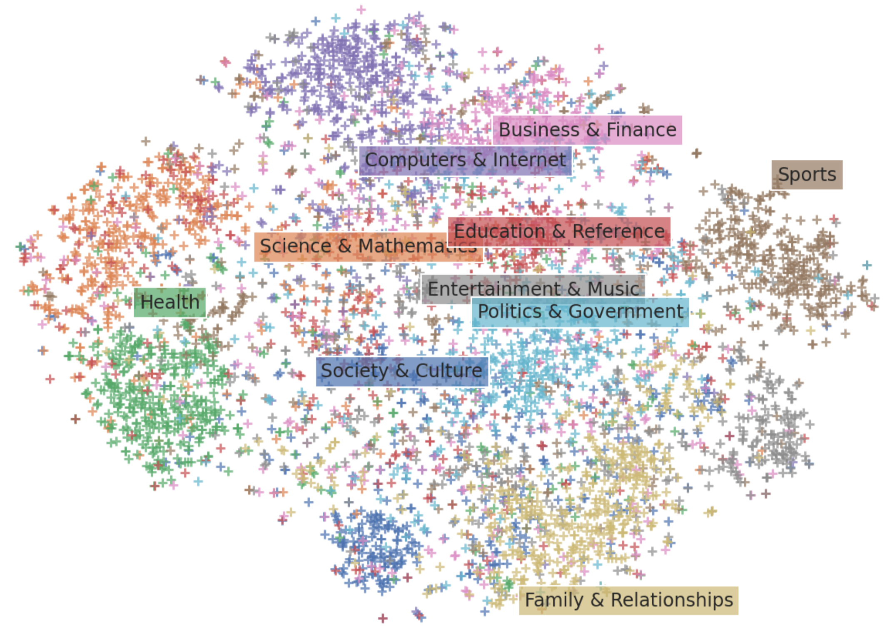
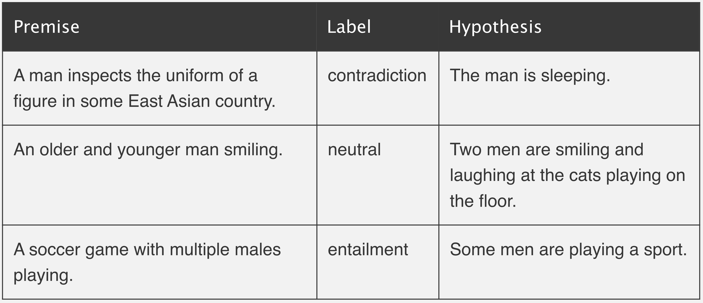
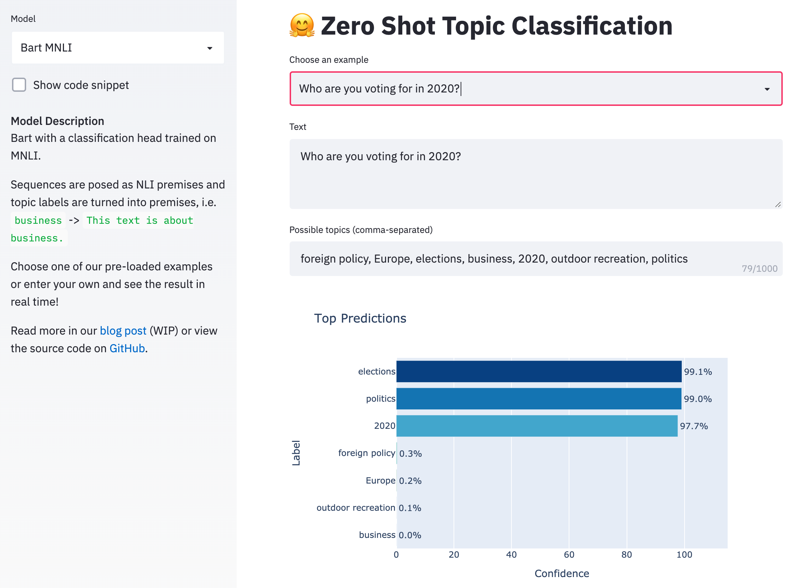
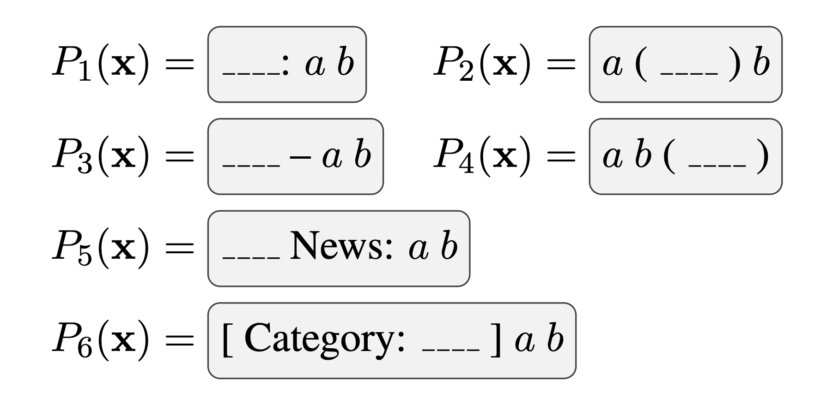

Natural language processing is a very exciting field right now. In recent years, the community has begun to figure out some pretty effective methods of learning from the enormous amounts of unlabeled data available on the internet. The success of transfer learning from unsupervised models has allowed us to surpass virtually all existing benchmarks on downstream supervised learning tasks. As we continue to develop new model architectures and unsupervised learning objectives, “state of the art” continues to be a rapidly moving target for many tasks where large amounts of labeled data are available.
One major advantage as models continue to grow is that we see a very slow decrease in the reliance on large amounts of annotated data for downstream tasks. This week the team at Open AI released a preprint describing their largest model yet, GPT-3, with 175 billion parameters. The paper is entitled, “Language Models are Few-Shot Learners”, and shows that extremely large language models can perform competitively on downstream tasks with far less task-specific data than would be required by smaller models.

gpt3 triviahq performance
However, models of this size remain impractical for real-world use. For instance, the largest version of GPT-3 must be partitioned across dozens of GPUs to even fit in memory. In many real-world settings, annotated data is either scarse or unavailable entirely. Models much smaller than GPT-3 such as BERT have still been shown to encode a tremendous amount of information in their weights (Petroni et al. 2019). It seems like if we were smart about it, we would be able to figure out some techniques for applying these models to downstream tasks in a way that takes advantage of this latent information without the need for so much task-specific annotated data.
Of course, some research has in fact been done in this area. In this post, I will present a few techniques, both from published research and our own experiments at Hugging Face, for using state-of-the-art NLP models for sequence classification without large annotated training sets.
What is zero-shot learning?
Traditionally, zero-shot learning (ZSL) most often referred to a fairly specific type of task: learn a classifier on one set of labels and then evaluate on a different set of labels that the classifier has never seen before. Recently, especially in NLP, it’s been used much more broadly to mean get a model to do something that it wasn’t explicitly trained to do. A well-known example of this is in the GPT-2 paper where the authors evaluate a language model on downstream tasks like machine translation without fine-tuning on these tasks directly.
The definition is not all that important, but it is useful to understand that the term is used in various ways and that we should therefore take care to understand the experimental setting when comparing different methods. For example, traditional zero-shot learning requires providing some kind of descriptor (Romera-Paredes et al. 2015) for an unseen class (such as a set of visual attributes or simply the class name) in order for a model to be able to predict that class without training data. Understanding that different zero-shot methods may adopt different rules for what kind of class descriptors are allowed provides relevant context when communicating about these techniques.
A latent embedding approach
A common approach to zero shot learning in the computer vision setting is to use an existing featurizer to embed an image and any possible class names into their corresponding latent representations (e.g. Socher et al. 2013). They can then take some training set and use only a subset of the available labels to learn a linear projection to align the image and label embeddings. At test time, this framework allows one to embed any label (seen or unseen) and any image into the same latent space and measure their distance.
In the text domain, we have the advantage that we can trivially use a single model to embed both the data and the class names into the same space, eliminating the need for the data-hungry alignment step. This is not a new technique – researchers and practitioners have used pooled word vectors in similar ways for some time (such as Veeranna et al. 2016). But recently we have seen a dramatic increase in the quality of sentence embedding models. We therefore decided to run some experiments with Sentence-BERT, a recent technique which fine-tunes the pooled BERT sequence representations for increased semantic richness, as a method for obtaining sequence and label embeddings.
To formalize this, suppose we have a sequence embedding model \(\Phi_\text{sent}\) and set of possible class names \(C\). We classify a given sequence \(x\) according to,
where \(\cos\) is the cosine similarity. Here’s an example code snippet showing how this can be done using Sentence-BERT as our embedding model \(\Phi_\text{sent}\):
# load the sentence-bert model from the HuggingFace model hub!pip install transformersfrom transformers import AutoTokenizer, AutoModelfrom torch.nn import functional as Ftokenizer = AutoTokenizer.from_pretrained('deepset/sentence_bert')model = AutoModel.from_pretrained('deepset/sentence_bert')sentence ='Who are you voting for in 2020?'labels = ['business', 'art & culture', 'politics']# run inputs through model and mean-pool over the sequence# dimension to get sequence-level representationsinputs = tokenizer.batch_encode_plus([sentence] + labels, return_tensors='pt', pad_to_max_length=True)input_ids = inputs['input_ids']attention_mask = inputs['attention_mask']output = model(input_ids, attention_mask=attention_mask)[0]sentence_rep = output[:1].mean(dim=1)label_reps = output[1:].mean(dim=1)# now find the labels with the highest cosine similarities to# the sentencesimilarities = F.cosine_similarity(sentence_rep, label_reps)closest = similarities.argsort(descending=True)for ind in closest:print(f'label: {labels[ind]}\t similarity: {similarities[ind]}')
label: politics similarity: 0.21561521291732788
label: business similarity: 0.004524140153080225
label: art & culture similarity: -0.027396833524107933
Note: This code snippet uses deepset/sentence_bert which is the smallest version of the S-BERT model. Our experiments use larger models which are currently available only in the sentence-transformersGitHub repo, which we hope to make available in the Hugging Face model hub soon.
One problem with this method is that Sentence-BERT is designed to learn effective sentence-level, not single- or multi-word representations like our class names. It is therefore reasonable to suppose that our label embeddings may not be as semantically salient as popular word-level embedding methods (i.e. word2vec). This is seen in the t-SNE visualization below where the data seems to cluster together by class (color) reasonably well, but the labels are poorly aligned. If we were to use word vectors as our label representations, however, we would need annotated data to learn an alignment between the S-BERT sequence representations and the word2vec label representations.

visual of S-BERT label and text embeddings
In some of our own internal experiments, we addressed this issue with the following procedure:
Take the top \(K\) most frequent words \(V\) in the vocabulary of a word2vec model
Obtain embeddings for each word using word2vec, \(\Phi_{\text{word}}(V)\)
Obtain embeddings for each word using S-BERT, \(\Phi_{\text{sent}}(V)\)
Learn a least-squares linear projection matrix \(Z\) with L2 regularization from \(\Phi_{\text{sent}}(V)\) to \(\Phi_{\text{word}}(V)\)
Since we have only learned this projection for embeddings of single words, we cannot expect it to learn an effective mapping between S-BERT sequence representations and labels embedded with word2vec. Instead, we use \(Z\) in our classification only as an additional transformation to S-BERT embeddings for both sequences and labels:
This procedure can be thought of as a kind of dimensionality reduction. As seen in the t-SNE visual below, this projection makes the label embeddings much better aligned with their corresponding data clusters while maintining the superior performance of S-BERT compared to pooled word vectors. Importantly, this procedure does not require any additional data beyond a word2vec dictionary sorted by word frequency.
On the Yahoo Answers topic classification task, we find an F1 of \(46.9\) and \(31.2\) with and without this projection step, respectively. For context, Yahoo Answers has 10 classes and supervised models get an accuracy in the mid 70s.

visual of S-BERT + projection label and text embeddings
When some annotated data is available
This technique is flexible and easily adapted to the case where a limited amount of labeled data is available (few-shot learning) or where we have annotated data for only a subset of the classes we’re interested in (traditional zero-shot learning).
To do so, we can simply learn an additional least-squares projection matrix to the embeddings of any available labels from their corresponding data embeddings. However, it is important that we do so in a way that does not overfit to our limited data. Our embeddings perform well on their own, so we need to find a projection between them that learns from what training data we have while still utilizing the semantic richness of these representations.
To this end, we add a variant of L2 regularization which pushes the weights towards the identity matrix rather than decreasing their norm. If we define \(X_{Tr}, Y_{Tr}\) to be our training data and labels and \(\Phi(X) = \Phi_\text{sent}(X)Z\) to be our embedding function as described above, our regularized objective is,
This is equivalent to Bayesian linear regression with a Gaussian prior on the weights centered at the identity matrix and variance controlled by \(\lambda\). By pushing \(W\) towards the identity matrix, we’re effectively pushing the resulting projected embeddings \(\Phi(X)W^\ast\) towards \(\Phi(X)\), which is exactly what we want to do. Informally, we have a prior belief that the best representation for our data is our embedding function \(\Phi(X)\mathbb{I}_d=\Phi(X)\) and we update that belief only as we encounter more training data.
Classification as Natural Language Inference
We will now explore an alternative method which not only embeds sequences and labels into the same latent space where their distance can be measured, but that can actually tell us something about the compatibility of two distinct sequences out of the box.
As a quick review, natural language inference (NLI) considers two sentences: a “premise” and a “hypothesis”. The task is to determine whether the hypothesis is true (entailment) or false (contradiction) given the premise.

example NLI sentences
When using transformer architectures like BERT, NLI datasets are typically modeled via sequence-pair classification. That is, we feed both the premise and the hypothesis through the model together as distinct segments and learn a classification head predicting one of [contradiction, neutral, entailment].
The approach, proposed by Yin et al. (2019), uses a pre-trained MNLI sequence-pair classifier as an out-of-the-box zero-shot text classifier that actually works pretty well. The idea is to take the sequence we’re interested in labeling as the “premise” and to turn each candidate label into a “hypothesis.” If the NLI model predicts that the premise “entails” the hypothesis, we take the label to be true. See the code snippet below which demonstrates how easily this can be done with 🤗 Transformers.
# load model pretrained on MNLIfrom transformers import BartForSequenceClassification, BartTokenizertokenizer = BartTokenizer.from_pretrained('facebook/bart-large-mnli')model = BartForSequenceClassification.from_pretrained('facebook/bart-large-mnli')# pose sequence as a NLI premise and label (politics) as a hypothesispremise ='Who are you voting for in 2020?'hypothesis ='This text is about politics.'# run through model pre-trained on MNLIinput_ids = tokenizer.encode(premise, hypothesis, return_tensors='pt')logits = model(input_ids)[0]# we throw away "neutral" (dim 1) and take the probability of# "entailment" (2) as the probability of the label being true entail_contradiction_logits = logits[:,[0,2]]probs = entail_contradiction_logits.softmax(dim=1)true_prob = probs[:,1].item() *100print(f'Probability that the label is true: {true_prob:0.2f}%')
Probability that the label is true: 99.04%
In the paper, the authors report a label-weighted F1 of \(37.9\) on Yahoo Answers using the smallest version of BERT fine-tuned only on the Multi-genre NLI (MNLI) corpus. By simply using the larger and more recent Bart model pre-trained on MNLI, we were able to bring this number up to \(53.7\).
See our live demo here to try it out for yourself! Enter a sequence you want to classify and any labels of interest and watch Bart do its magic in real time.

live demo
When some annotated data is available
Fine-tuning this model on a small number of annotated data points is not effective, so it is not particularly amenable to the few-shot setting. However, in the traditional zero-shot setting where we have sufficient data for a limited number of classes, this model excels. Training can be done by passing a sequence through the model twice: once with the the correct label and once with a randomly selected false label, optimizing cross-entropy.
One problem that arises after fine-tuning is that the model predicts a much higher probability for labels it has seen than for those it has not. To mitigate this issue, the authors introduce a procedure that penalizes labels at test time which were seen at training time. See the paper for full details.
Check out our demo to try out a version of this model fine-tuned on Yahoo Answers. You can also find the authors’ GitHub repo here.
Classification as a cloze task
One in-the-works approach to keep your eye on is a preprint on Pattern-Exploiting Training (PET) from Schick et al. (2020). In this paper, the authors reformulate text classification as a cloze task. A cloze question considers a sequence which is partially masked and requires predicting the missing value(s) from the context. PET requires a human practitioner to construct several task-appropriate cloze-style templates which, in the case of topic classification, could look something like the following:

cloze examples
A pre-trained masked language model is then tasked with choosing the most likely value for the masked (blank) word from among the possible class names for each cloze sentence.
The result is a set of noisy class predictions for each data point. This process alone serves as a basic zero-shot classifier. In addition, the authors introduce a sort of knowledge distilation procedure. After generating a set of predictions from the cloze task, these predicted values are used as proxy labels on which a new classifier is trained from scratch. My intuition is that this step is effective because it allows us to do inference over the whole test set collectively, allowing the model to learn from the set over which it is predicting rather than treating each test point independently. I suspect that this step would be particularly helpful when adapting to novel domains which do not resemble the MLM’s training corpus.
In the most recent version of their paper, the authors also discuss an iterative self-training procedure on top of PET which reports an impressive accuracy of \(70.7\%\) on Yahoo Answers, which nearly approaches the performance of state-of-the-art supervised classification methods.
This brings me back to my earlier point about considering experimental parameters when comparing different methods. Although PET significantly outperforms the other methods described here, it also makes use of data which the other approaches do not assume access to: multiple task-specific, hand-crafted cloze sentences and a large set of unlabeled data for the distilation/self-learning step. I say this not to knock PET by any means, nor do the authors compare themselves to the methods I’ve outlined here, but simply to emphasize the importance of taking care in comparing different approaches which can all be considered, in some sense, “zero-shot”.
When some annotated data is available
The authors present a well-developed method for using PET in the case where some training data is available, effectively minimizing a joint loss between optimizing cloze predictions for any available training data and the standard MLM loss. The details are somewhat inovlved, so if you’re interested I highly recommend checking out their preprint, YouTube tutorial, or GitHub repo.
On low-resource languages
One extremely important data-scarse setting in NLP is in low-resource languages. Fortunately, it’s a very active research area and much has been written about it. For those interested in this area, I’d highly recommend checking Graham Neubig’s recently released Low Resource NLP Bootcamp. This is a fantastic resource in the form of a GitHub repo containing 8 lectures (plus exercises) focused on NLP in data-scarse languages. Additionally, I’d recommend check out Sebastian Ruder’s writings including, “A survey of cross-lingual word embedding models”.